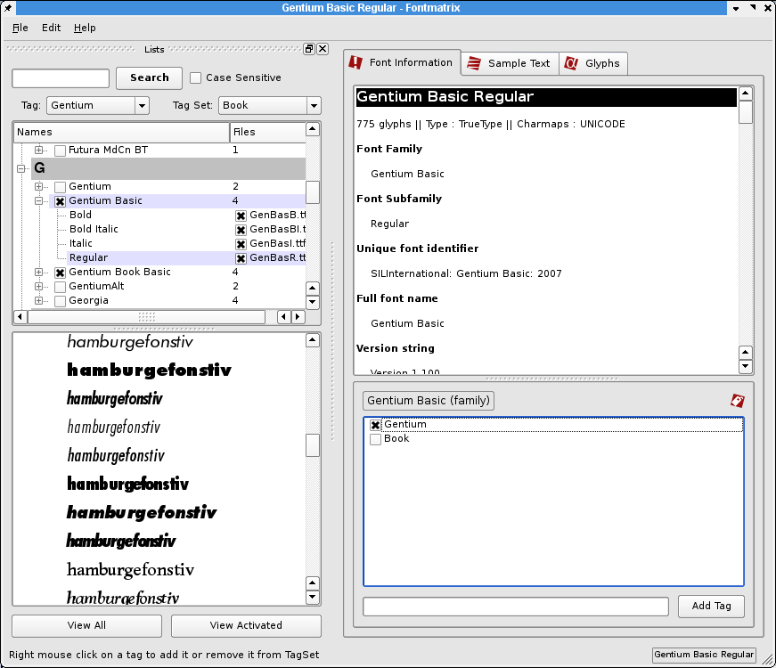

For those users coming from MacOSX or an even older MacOS one of the perceived missing parts on Linux is a nice graphical font manager. Enter Fontmatrix. While it is young, it has all the essentials to manage fonts both individually and in groups via "tags". Fontmatrix also has some nice features to preview not just sample text, but at scalable sizes along with the ability to view individual glpyhs. Even better Fontmatrix supports Open Type fonts very well and in the future plans are advanced Open Type abilities.
While Fontmatrix does not "activate" fonts on the fly for open applications, it can add and remove fonts quickly without messing with the important system fonts which all applications rely on. So for working with Scribus or other graphics applications, simply preview and add fonts as needed, then restart your application. Lastly, Fontmatrix can create "fontbooks" which are PDF's displaying each font.
|  |